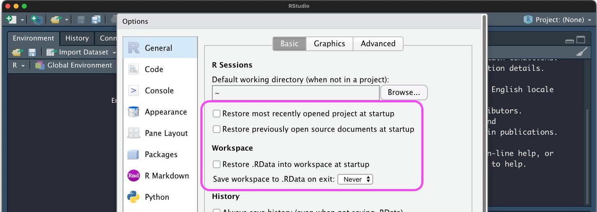
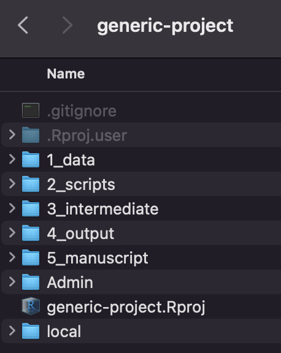
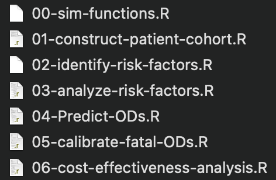
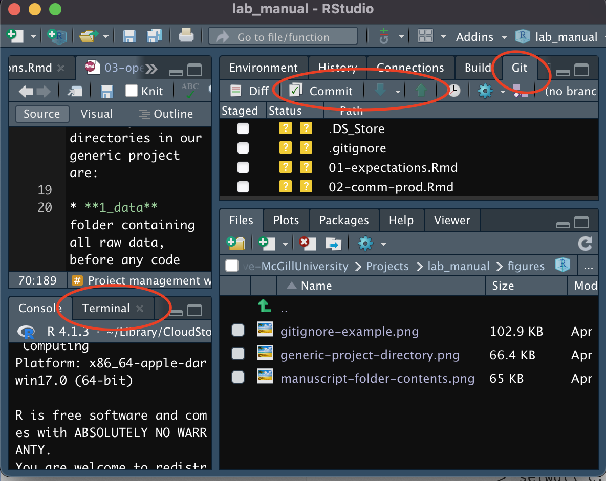
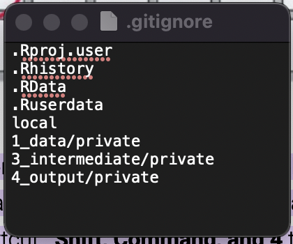
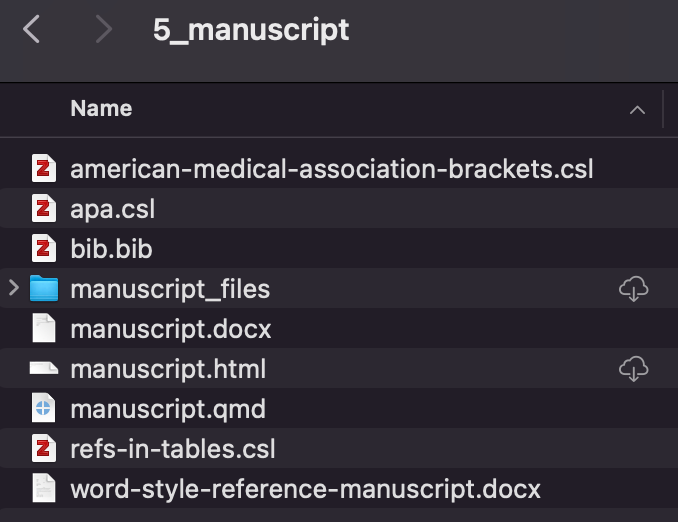
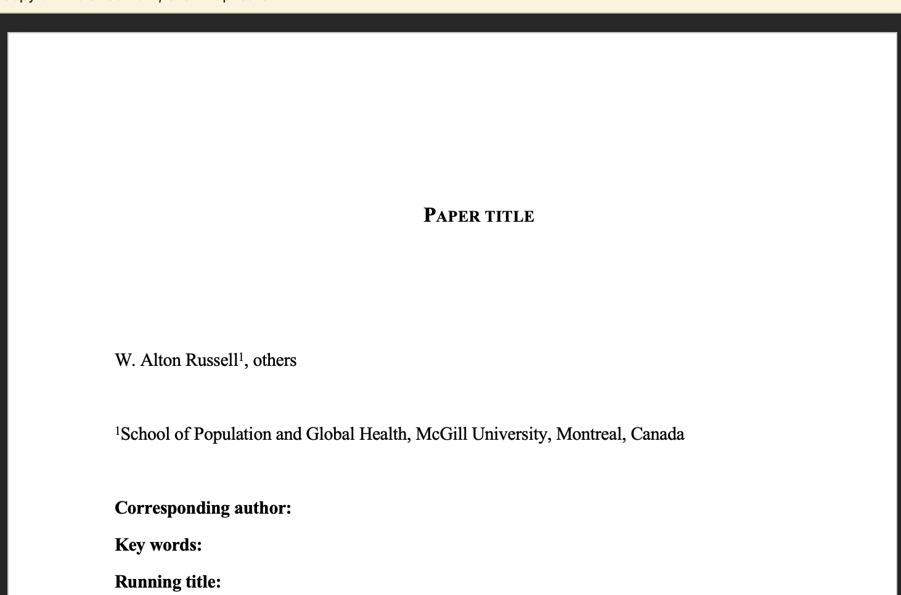
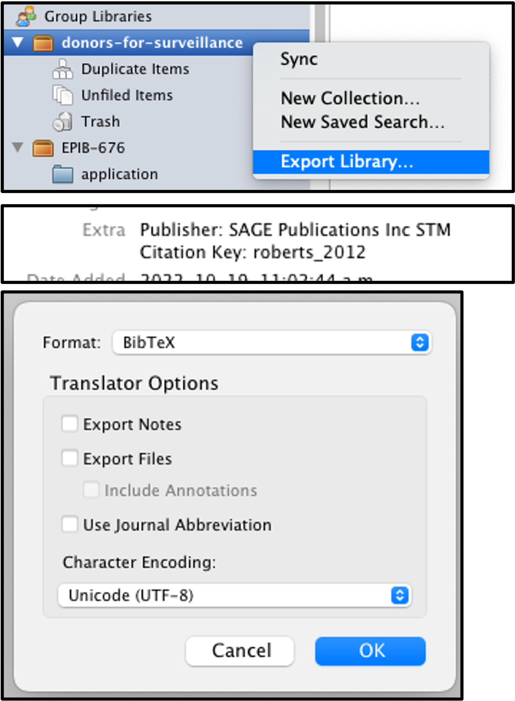
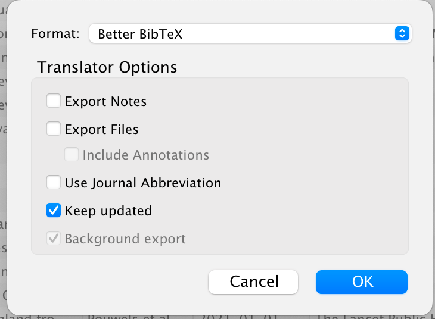

EPIB 676 session 6, McGill University
2024-09-17
Open and reproducible principles
My R Project workflow
Analysis can be exactly redone, given same materials
Code
Environment
Data
Can you run your entire workflow again?
Can another person run your entire workflow again?
Can “future-you” run your entire workflow again?
Can “future-another-person” run your entire workflow again?1
Necessary conditions
Code
Datasets
Info to reconstruct environment
“Overachieving”
Code-generated manuscripts
Functional docker-container
Apps/widgets to run model/interrogate analysis
Manuscript is an advertisement. The product is the associated work
Code
Data
Shiny app, etc.
An article about a computational result is advertising, not scholarship. The actual scholarship is the full software environment, code and data, that produced the result.
No one asked
It’s not ‘camera ready’
Want to keep competitive edge
Mistakes might be found
Usually, not the best reasons
Only way to fully communicate methods
Public or non-profit funded research is a public good
Extend your potential contribution
Mistakes might be found
Can increase citations
Messy code >>> No code!
Gabelica et. al.1 found:
3416 of 3556 articles (96%) included data availability statements
1782 (42%) indicated data available on request, but
1528 (86%) did not respond
131 (7%) declined to share
123 (7%) shared their data
H2020 Program Guidelines on FAIR Data, European Commission
Data sharing isn’t always possible
Code is useful, even without data
Precisely communicates methods
Others can adapt, borrow + run on their own data
Increase reproducibility without sharing data with
‘Data dictionary’ in supplement
Synthetic data(?)
R and R packages get updated
No guarantee of backwards compatibility
Potential solutions
renv package for reproducible environments
Docker containers (self-contained environment)
Self contained set of files (data, scripts, reports)
Portable if all file paths relative to project directory
No:"\Users\alton\projects\COVID\data\dat.csv"
No: setwd("\Users\alton\projects\COVID")
Yes: "1_data\dat_file.csv"
Use console when developing code, but ‘restart r and clear output’ before final run
Set global options to maximize reproducibility
 ## Renv
renv::init() (first time) adds to your Rproject:
A project library of all packages
A lockfile, renv.lock with metadata needed to reinstall packages
If you add/update packages, use renv::snapshot() to update your lockfile
Changes to .Rprofile means packages should default to lockfile version when project loaded
Note: R version is saved, but Renv won’t load it for you!
{
"R": {
"Version": "4.3.1",
"Repositories": [
{
"Name": "CRAN",
"URL": "https://cloud.r-project.org"
}
]
},
"Packages": {
"markdown": {
"Package": "markdown",
"Version": "1.0",
"Source": "Repository",
"Repository": "CRAN",
"Hash": "4584a57f565dd7987d59dda3a02cfb41"
},
"mime": {
"Package": "mime",
"Version": "0.12.1",
"Source": "GitHub",
"RemoteType": "github",
"RemoteHost": "api.github.com",
"RemoteUsername": "yihui",
"RemoteRepo": "mime",
"RemoteRef": "main",
"RemoteSha": "1763e0dcb72fb58d97bab97bb834fc71f1e012bc",
"Requirements": [
"tools"
],
"Hash": "c2772b6269924dad6784aaa1d99dbb86"
}
}
}Creates image of your environment, including operating system, R version, packages, etc.
Based on Linux distribution (usually Ubuntu)
On new machine (with Linux), you can create the container based on the image
Idea of Donald Knuth: Code snippets and ‘natural language’ (e.g., English) interspersed in one document
Jupyter notebooks Python, Julia, others
RMarkdown R
Quarto documents R, Python, Julia, JavaScript
Put all shareable materials in one publicly-accessible, citeable spot (and cite it in your manuscript!)
Permanent third-party repo > github repo
Zenodo.org: general purpose, can link to a github release, DOI for each version by default
OSF.io: open science framework, can DOI repo but not version
Global Health CEA open-source model clearinghouse (25 models; 4 in R)
Open and reproducible principles
My R Project workflow
Can clone or download my template here:

1_data (self-explanatory)
2_scripts code not embedded in manuscript
3_intermediate intermediate outputs
4_output figures, tables that will be read into the manuscript
5_manuscipt .qmd and ‘rendered’ manuscript
Also put data documentation (dictionary, meta-data) here
Put parameter tables in Excel (Assign2 has example)
Read into RScript to run model
Read into Quarto to display in manuscript
Line-level data in csv, json or feather or parquet
Tables/objects generated by scripts go to intermediate or output folder (not data!)
Use intermediate folder for non-final objects (objects later read into another script)
For smaller projects, you could get rid of intermediate and just save everything to output
Look at saved output, not Rstudio viewer, to tweak
Vector format (svg, pdf) usually preferred over raster
Vector looks sharp no matter how zoomed in
Small filesize for line plots plots (but not complex figures)
PDF figures don’t play nice with Word
Script runs error-free in new environment
Name: Numbers then verbs
00 is “helper functions”: to de-clutter, put functions hear, call source("00-helper-functions.R") in scripts

Warning
Each script should run error-free in new environment without running another script first. Need to load packages, source helper scripts, read in data
Smaller functions that call each other are easier to understand & debug than one massive function
Often develops over time:
At first, write code directly in script (no function)
Then, break key parts into functions
As number of functions grow, move some to 00-hepler-functions script and source() into analysis scripts
# Text ----- will create a section for your outline
Neat hack: #| - Text ---- can create ‘subsections’

Can pull, commit, and push within Rstudio
Use terminal for more complex things
Also works in Rstudio server!
 By design, you’ll need to add these to my template before you can use.
List all folders/files you don’t want on github
“local” folder (data use agreements, conference presentations, meeting minutes, etc.)
“private” sub-folders for objects that cannot be made public
Usually make github repo private while developing project and change to public when publishing
Use when data use agreement and/or ethics prevents sharing data
Never store private data on github, even in private repo
Warning
Objects other than data tables can include data (e.g., saving an ML model or multiply-imputed dataset object may have embedded data!)
Happen if two users (or same user on two different machines) edits same line of file, or one user edits a file that another deletes
If you have questions, please
<<<<<<< HEAD
open an issue
=======
ask your question in IRC.
>>>>>>> branch-aAvoid by pulling, & committing+pushing often!
Note
This is why if you edit the assignments you may be unable to pull the class repo. Can copy anything you want to edit into another location so you can always pull.
Replacing RMarkdown (can embed Python or Julia)
Some RMarkdown packages don’t (yet) work properly in Quarto
Can “knit” (RMarkdown) or “Render” (Quarto) to:
HTML (this document)
Word
Powerpoint
↓
The mean cost per person was $1,212
It talks longer to write inline code than hard-code numbers.
But:
If you change parameter and rerun your scripts, all results will update
Reduces risk of transcription error (but introduces risk of coding error)
.Qmd that knits to Microsoft Word
Requires a .bib file for bibliography
Use flextable package to make pretty tables
https://github.com/altonrus/generic-project/blob/main/5_manuscript/manuscript.qmd
YAML header to specify title, output format, bib file, citation style
<br> for line breaks; {{< page*break >}} (without *) for page breaks
Allows latex equations
Custom crossref for supplemental tables and figures

Reference manuscript: set format for headers, table of content, etc.
.csl file specifies citation format (default is AMA format with numbers in brackets)
.bib file contains references to cite by citation code, e.g., [@russell2021a]

Normal word document
Collaborators track changes and return
Must manually update .Qmd (annoying)

Export Zotero collection to Bibtex in same folder as manuscript.qmd
To replace default CiteKey, add Citation Key: <CiteKey> to ‘extra’ field
In .qmd header, set bibliography: [filename].bib
Cite with [@CiteKey] or [@CiteKey1; @CiteKey2]
Better BibTex for Zotero (also see this blog)
Auto-assigns citation keys within Zenodo
If you export to “Better bibtex” format, with “Keep updated” checked, .bib file auto-adds anything added in Zotero

Permanent
Assigned a DOI (cite the repo in the manuscript!)
Two options
Upload manually
:ink Github account and auto-update Zenodo whenever making a ‘release’ on Github
Manuscript: https://doi.org/10.1101/2020.11.02.20224568
Zenodo repository: https://doi.org/10.5281/zenodo.4107124
Github repository: https://github.com/altonrus/quarantineTesting
Shiny app: https://shiny.mchi.mcgill.ca/arussel/quarantineTesting/
Reproducible Analytical Pipelines Course, Bruno Rodrigues
Reproducible research in R workshop, Johnston et. al.
“Telling Stories with Data” Ch. 3 by Rohan Alexander
Good enough practices in scientific computing Wilson et. al.
Intro to Dockers for R Users by Colin Fay
See Info for non-programming assignments in syllabus folder of Github.